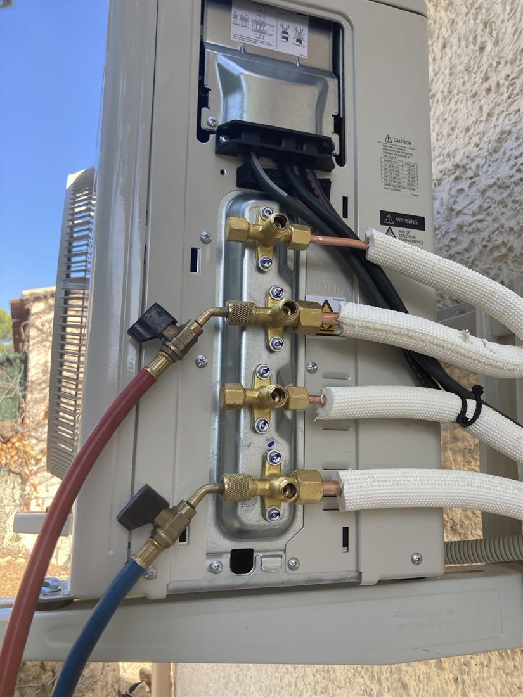

Accueil › Cavaillon et la Durance › Cheval-Blanc
Climatisation à Cheval-Blanc
Entre la Durance et le Luberon, Cheval-Blanc compte beaucoup de maisons individuelles. Thierry y pose, entretient et dépanne les clims réversibles.
- Thierry vient d'Eyguières, à environ 15 km
- Devis gratuit, sans engagement
- Installation garantie 2 ans
- Rappel dans la journée, du lundi au vendredi
Maisons avec jardin au pied du Luberon
La plupart des maisons ont un jardin : le groupe extérieur peut être posé au sol, à l'écart des chambres et de la terrasse. C'est souvent plus discret qu'en façade et plus facile d'accès pour l'entretien.
Les champs et les vergers autour apportent poussière et pollens. Le groupe extérieur s'encrasse plus vite qu'en ville : un nettoyage par an garde la clim efficace.
Les conseils de Thierry pour Cheval-Blanc
- Poser le groupe au sol sur un socle surélevé, à l'abri de l'eau et des feuilles.
- Laisser de l'espace autour du groupe pour qu'il respire.
- Rincer les filtres intérieurs tous les mois en été.
Ce que fait Thierry à Cheval-Blanc
Installation
Clim réversible murale, multisplit pour plusieurs pièces, console ou gainable, choisie après la visite.
Faire poser une clim ›Entretien
Nettoyage complet des unités et du groupe extérieur, contrôles. Une clim propre consomme moins.
Faire entretenir sa clim ›Dépannage
Ne chauffe plus, coule, affiche un code ou fait du bruit : diagnostic, puis prix annoncé avant la réparation.
Clim en panne ›Une pose de Thierry


Questions fréquentes à Cheval-Blanc
Intervenez-vous dans le Vaucluse ?
Oui. Cheval-Blanc, Cavaillon, Robion ou L'Isle-sur-la-Sorgue font partie du secteur de Thierry, même si l'entreprise est à Eyguières.
Combien coûte l'entretien d'une clim ?
Le prix dépend du nombre d'unités. Appelez pour avoir le tarif, ou demandez-le avec le formulaire.
Thierry intervient aussi autour de Cheval-Blanc
Un projet de clim à Cheval-Blanc ?
Le plus rapide reste le téléphone. Sinon, laissez votre numéro, vous êtes rappelé dans la journée.